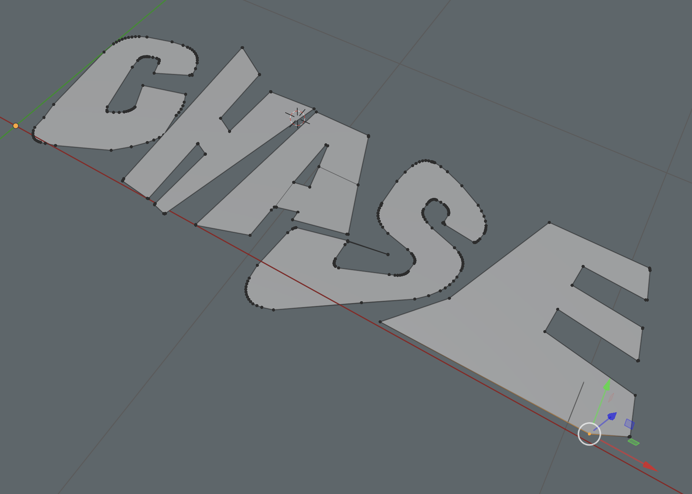

CHASE is for when I really don’t know what’s going on. It’s been an outlet
since ceramics took a back seat and engineering’s at the wheel. It’s part memory—capturing
fragments with friends—and part “make something that looks cool and unique.”
clock hands advance, seize everything is a reminder not to let fear of judgment stop me from creating.
Aside from this portfolio, I’ve never really made any of it public. Hope you enjoy.